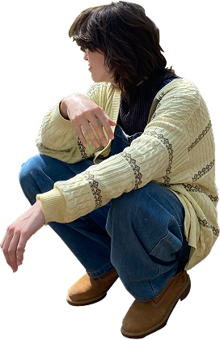
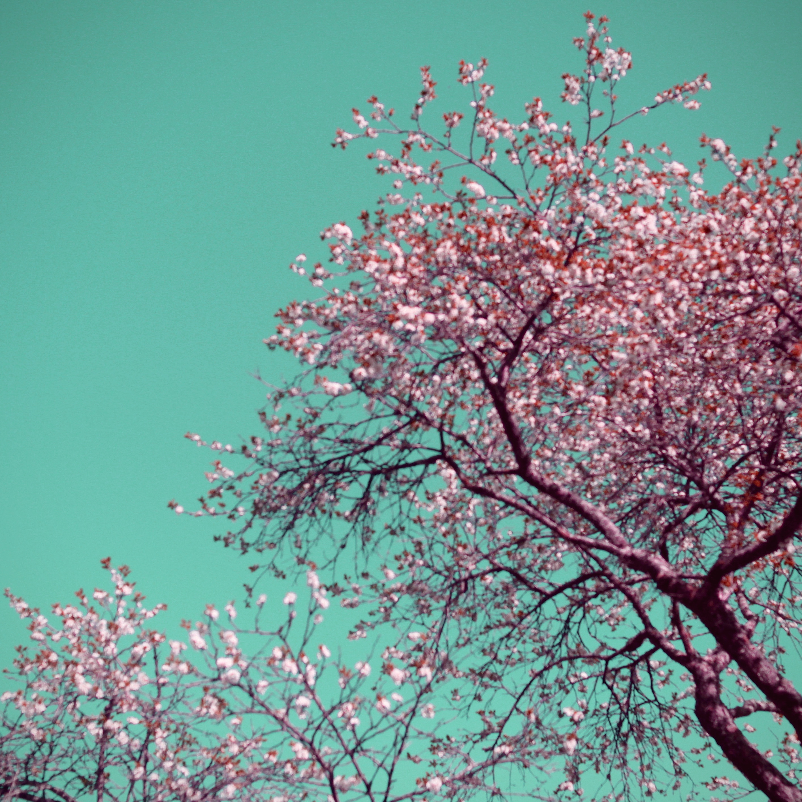
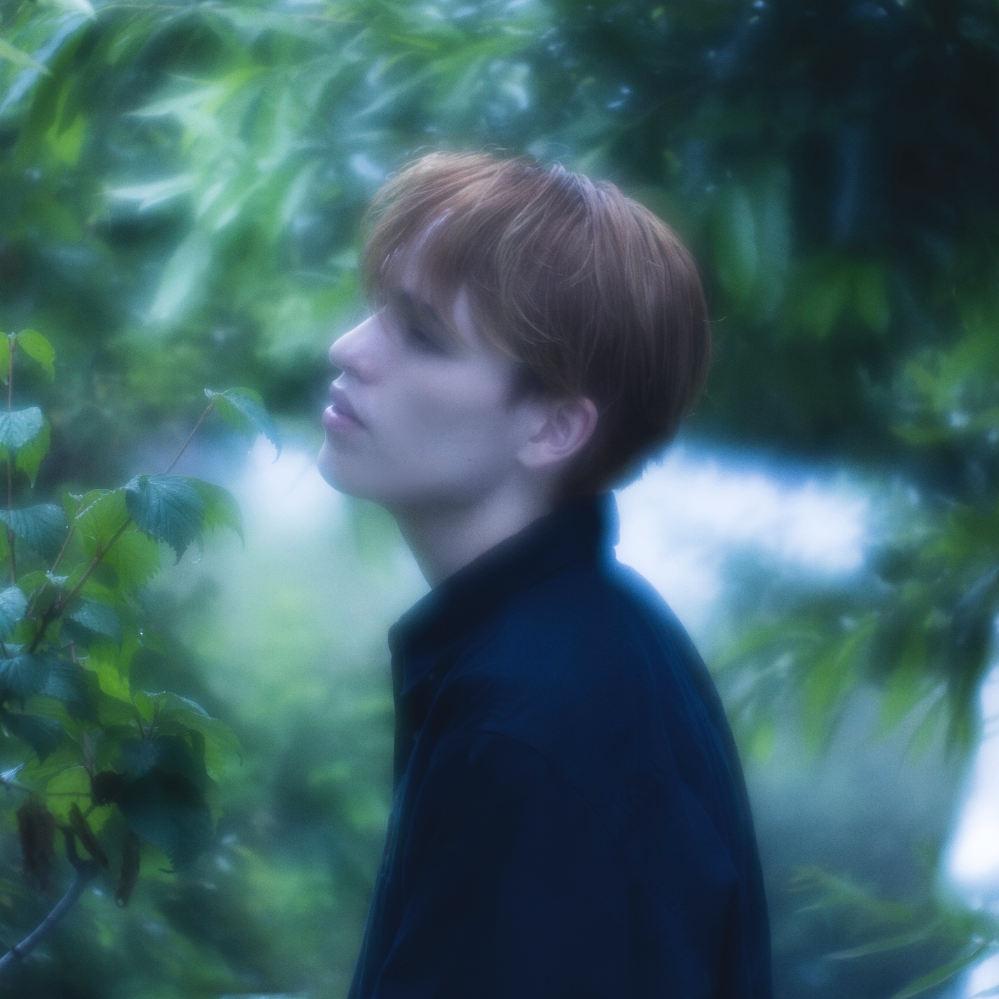

Education
2019 - 2022
Watanabe education high school
Music, Acting, and Dancing
2022 - 2026
Josai International University
Bachelors in Media information through Music, and Film
2024 - 2025
Bergen University in Norway
Film, TV and Visual Culture: History and Theory
Experience
2022
Freelancer
Soundtracks Producer, Film Sound Director
2023
Hardrock Cafe staff and Barista
Costermer service and Training staff
2024
English Teacher
Education Japanese children by gamifying
Technical skills
Location
Japan, Tokyo / Gifu
Born, lived, and educated
Norway, Bergen
Exchange student for a year
Hungary, Budapest
Currently based

Contact
jakereardon0609@gmail.com
+81 90 8956 0609
ryushin_0609
Films MV
2022
金と依存
(Money and addiction)
Director / Editor Debut
My first production as both director and editor. While the technical quality reflects the learning curve, the film received praise from professionals for its compelling narrative and the perspective brought to its characters. Capturing the greed and the raw, everyday struggle with money through the protagonist eyes.
2025
Dear
Theme song Producer / Soundtrack Composer / Finance Advisor
A 1 hour 10 minute graduation project with a shocking and dark narrative, portraying three characters and their deeply personal struggle with identity and sin. Approaching this film as a composer led me to reflect deeply on its emotional depth and the beauty of its meaning.
Crafting music that elevated the story and drew the audience closer to its world demanded constant communication with the team and a thorough understanding of each character's nuances. Sexuality, identity, and the struggle with bullying are not easy topics, but they are necessary ones. To portray them with meaning and narative is what makes storytelling relevant and powerful in the modern world.
2023
奪い去りたい
(Take you away)
Director / Composer
An amateur music video built around a unique narrative exploring love and jealousy. The film carries strong meaning and depth through its use of props most notably, flowers, which serve as an emotional lens for self-image and identity, ultimately becoming a symbol of devotion as they are offered as a gift to the heroine.
2025
あなたさえいてくれれば
(If only you were here)
Closing Theme Composer
Composed “2n1” a closing theme capturing the protagonist's struggle in an alternative universe where humanity has vanished. The track deepens the mystery and holds emotional weight, leaving the audience with an lingering sense and an open question of what happened.
Music
- 01 この体に愛が溢れますように Somiya Ryu 1:57
- 02 Like fire Somiya Ryu 1:09
- 03 It's okay to be afraid Somiya Ryu 1:38
- 04 Shiawase Somiya Ryu 0:55
- 05 Maybe Next time Somiya Ryu 2:49
- 06 奪い去りたい Somiya Ryu 1:54
- 07 Sakura till next year Somiya Ryu 1:55

- 01 Take me higher Somiya Ryu 3:14
- 02 Whispers of dreams Somiya Ryu 3:07
- 03 Wish I could do the same Somiya Ryu 3:40

- 01 草原 Dear 1:45
- 02 道なき道 Dear 2:39
- 03 あゆみの先 Dear 2:28
- 04 再スタート Dear 1:48
- 05 パンさんの希望 Dear 2:13
- 06 Morning Josai 1:03
- 07 Believe Josai 1:01
S・A・D
A fan favorate form live performence that was never releashed. S ・A・D(Social Anxiety Disorder) was produced during my first year in university. I was very active with my friends and enjoying a tipical Uni life. However, I had one friend who would take me for granted, I was confused and treated tarabaly resulting it trust issue and my mental.
Lovely as can be
Big dreams, a broken spirit, and the endless Shibuya nights. This is the song of finding yourself again, and finally falling in love with who you are. A one-night music video shoot with a friend, Sota. The endless street lights of Shibuya inspired us to create and experiment with new ideas that would challenge our skills as creators.